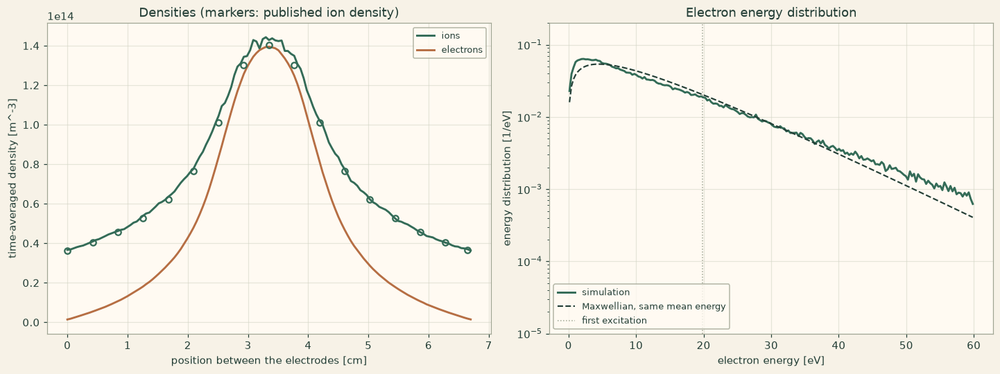

Docs › Examples › Capacitively coupled helium discharge: PIC benchmark case 1
Particle-in-cell · 1D
Capacitively coupled helium discharge: PIC benchmark case 1
A 13.56 MHz helium discharge between two parallel electrodes, simulated with electron and ion macro-particles until it reaches its periodic steady state.
Run locally with OneSimulation. The example downloads are free. Running them requires an activated runtime. Runtime Alpha 0.2.1a7 · CPython 3.13 on macOS (Apple Silicon), Ubuntu 22.04 (x86-64), and Windows x64. Installation and activation · View pilot plans. Scope of the reference checks.

What it computes
OneSimulation follows electrons and helium ions in 1d3v with a self-consistent Poisson field and null-collision Monte Carlo scattering on the bundled helium cross sections, with the numerical parameters prescribed by the benchmark: 128 cells, 400 steps per RF period, 1280 periods and an average over the last 32. The packaged discharge needs only its operating point and a numerical configuration.
What it checks
The midplane ion density is 1.428e14 m^-3 against the published 1.40e14 (+2.0 %), the electron and ion power densities and the ion current agree within 0.7 %, the midplane electron temperature within 4.3 %, and the ion density profile follows the published one within 3.4 % of the peak (rms 1.4 %); the full 512,000-step run took 257 s.
The notebook
The complete notebook, cell by cell. Run it to produce the figures and the comparison printout.
Two plane electrodes 6.7 cm apart enclose helium at 300 K and about 4 Pa. One electrode is driven with \(V(t)=V_0\sin(2\pi f t)\), \(V_0=450\) V, \(f=13.56\) MHz, the other is grounded. Electrons gain energy in the oscillating sheaths in front of the electrodes, ionise the gas and sustain a plasma whose ions stream to the walls. At this low pressure the electron energy distribution is far from Maxwellian, so a fluid model cannot predict the discharge; the standard tool is the particle-in-cell method with Monte Carlo collisions (PIC-MCC).
OneSimulation follows electrons and He\(^+\) ions as macro-particles in one space and three velocity dimensions (1d3v). Each time step it deposits the charge on the grid, solves Poisson's equation
moves the particles in the field and lets them collide with the background gas by the null-collision method. The helium cross sections ship with the library:
| species | processes | |---|---| | electrons | elastic scattering, two excitation levels (19.82 eV, 20.61 eV), ionisation (24.55 eV) | | He\(^+\) ions | isotropic elastic scattering, backscattering (charge exchange) | | electrodes | absorb every particle, no secondary emission |
Reference (M. M. Turner, A. Derzsi, Z. Donkó, D. Eremin, S. J. Kelly, T. Lafleur and T. Mussenbrock, Simulation benchmarks for low-pressure plasmas: capacitive discharges, Phys. Plasmas 20, 013507, 2013). Five independent PIC codes were run on four cases; for case 1 (\(N=9.64\times10^{20}\) m\(^{-3}\), \(V_0=450\) V) the paper publishes the time-averaged ion density profile, the midplane ion density \(n_i(L/2)=1.40\times10^{14}\) m\(^{-3}\), the midplane electron temperature \(k_BT_e=\tfrac23\langle\varepsilon\rangle=9.36\) eV, the power absorbed by electrons and ions (34.3 and 90.6 W/m\(^2\)) and the ion current density at the electrode (0.219 A/m\(^2\)). The numerical parameters below are those prescribed by the benchmark.
import numpy as np
from onesim.numerics import PICNumericalConfiguration
from onesim.physics.plasma import (
BinomialCollisionCandidates,
CapacitiveDischargePIC,
PICMCCExecution,
)
from onesim.visualization import plots, theme
theme.set()Discharge and numerics
CapacitiveDischargePIC.helium sets up the physical problem with the bundled helium data. The benchmark prescribes 128 cells, 400 time steps per RF period, 512 macro-particles per cell and species at the start, 1280 RF periods to reach the periodic state and an average over the last 32.
frequency, gap = 13.56e6, 0.067
discharge = CapacitiveDischargePIC.helium(
gap=gap,
frequency=frequency,
voltage=450.0,
gas_density=9.64e20,
initial_density=2.56e14,
)
numerics = PICNumericalConfiguration(
cells=128,
time_step=1 / (400 * frequency),
steps=1280 * 400,
averaging_steps=32 * 400,
particles_per_cell=512,
seed=20130107,
diagnostic_stride=32,
kernel="numba",
)
execution = PICMCCExecution(
electron_candidate_sampler=BinomialCollisionCandidates(),
ion_candidate_sampler=BinomialCollisionCandidates(),
)
result = discharge.run(execution=execution, numerics=numerics)Comparison with the benchmark
The published ion density profile of case 1 is given at 17 positions across the gap (in units of \(10^{14}\) m\(^{-3}\), read from the paper's figure). The simulated profile is interpolated to the same positions.
published_position = np.array(
[
0.0,
0.0625,
0.125,
0.1876,
0.25,
0.3124,
0.3748,
0.4373,
0.5002,
0.5627,
0.6252,
0.6876,
0.75,
0.8124,
0.875,
0.9375,
0.9921,
]
)
published_density = 1e14 * np.array(
[
0.3615,
0.4033,
0.4578,
0.5276,
0.6219,
0.7661,
1.011,
1.301,
1.4047,
1.3003,
1.011,
0.7668,
0.6226,
0.5282,
0.4578,
0.4027,
0.3648,
]
)
simulated = np.interp(published_position, result.coordinates / gap, result.ion_density)
published = {
"midplane ion density [1e14 m^-3]": (1.40, result.midplane_ion_density / 1e14),
"midplane electron temperature [eV]": (9.36, result.midplane_electron_temperature),
"electron power density [W/m^2]": (34.3, result.electron_power_density),
"ion power density [W/m^2]": (90.6, result.ion_power_density),
"ion current density [A/m^2]": (0.219, result.ion_current_density),
}
print("quantity published simulation deviation")
for name, (reference, value) in published.items():
print(
f"{name:38s} {reference:10.3f} {value:12.3f} {100 * (value / reference - 1):+10.1f} %"
)
print(
f"ion density profile: largest deviation {100 * np.abs(simulated - published_density).max() / published_density.max():.1f} % "
f"of the peak, rms deviation {100 * np.sqrt(np.mean((simulated - published_density) ** 2)) / published_density.max():.1f} %"
)
diagnostics = result.diagnostics
print(
f"resolution: omega_p dt = {diagnostics['omega_p_dt']:.3f}, Debye length / cell = {diagnostics['debye_over_dx']:.2f}, "
f"{diagnostics['particles_per_debye_length']:.0f} particles per Debye length, "
f"{result.particle_counts['electron']} electrons and {result.particle_counts['ion']} ions at the end"
)Figure
Left: the time-averaged electron and ion densities. In the bulk the plasma is quasi-neutral; in the sheaths next to the electrodes the electrons are missing on average, and only the ions remain. Right: the electron energy distribution in the midplane. Compared with a Maxwellian of the same mean energy it holds more slow electrons and a stronger tail far above the excitation threshold: at this low pressure the bulk electrons stay cold while those heated by the oscillating sheaths reach high energies, the typical two-temperature shape of a capacitive discharge.
temperature = result.midplane_electron_temperature
maxwellian = (
2
* np.sqrt(result.energy_bins / np.pi)
* temperature**-1.5
* np.exp(-result.energy_bins / temperature)
)
fig = plots.figure(1, 2, size=(13, 4.8))
plots.line(
100 * result.coordinates,
{"ions": result.ion_density, "electrons": result.electron_density},
points={"ions": (100 * gap * published_position, published_density)},
xlabel="position between the electrodes [cm]",
ylabel="time-averaged density [m^-3]",
title="Densities (markers: published ion density)",
legend="upper right",
ax=fig[0],
)
plots.line(
result.energy_bins,
{"simulation": result.energy_distribution},
reference={"Maxwellian, same mean energy": maxwellian},
vlines={"first excitation": 19.82},
scale="logy",
ylimits=(1e-5, 0.2),
xlabel="electron energy [eV]",
ylabel="energy distribution [1/eV]",
title="Electron energy distribution",
legend="lower left",
ax=fig[1],
)
plots.show()Going further
The paper defines three more cases at higher pressure (up to 120 Pa) and lower voltage; they need finer cells and smaller time steps and run between 30 and 300 times longer. Set kernel="numpy" to run the same model without the compiled kernel, or vary the driving voltage to follow how the midplane density grows with the absorbed power.